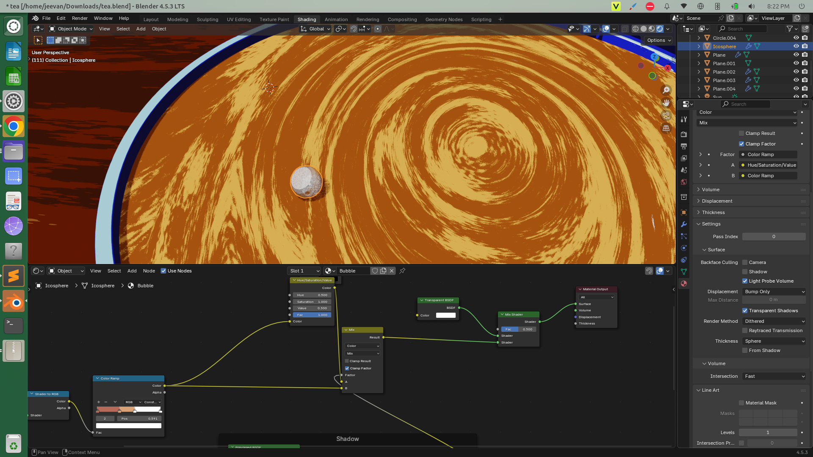

Should we make art when AI can do it ?
November 20, 2025
(Here art refers to anything such as, making a video, doing a standup, painting something...creating something.)
Read more →
"I have noticed that worrying is like praying for what you don't want to happen." - Robert Downey Jr
(Here art refers to anything such as, making a video, doing a standup, painting something...creating something.)
Read more →
Lets travel back to the time when a machine that can perform maths accurately and faster than any human was invented. Yes, I am speaking about the calculator.
Read more →
Movies, Games, Music, Books... these are all different mediums of expressing experiences.
Now, a movie may contain music, storytelling inspired by books, and 3D models taken from games ... but does that make movies something "greater" than music or games?
Read more →Ever since I installed Airtel Wi-Fi, my dad has been looping the Mahabharatam (2013) series every day. Whenever I pass by, someone's always doing tapas ... and one day, I saw Arjuna doing it too.

Curious, I looked it up ...
Read more →Today I learned how to model a cartoony-style rendering of a tea cup. I discovered a lot about shading, the process of giving color, texture, and material properties to a 3D model. What I love about Blender is that every part of the art creation process is in our control.
For example, we can decide exactly how the flow of water appears inside the cup. In the photo of coffee shown below, the flow of liquid in surface might look circular, but in Blender, we can shape it however we like. That freedom to define every detail is superb.
Even something like controlling shadows is entirely up to us. If we want to place an object under the shadow of another without it casting a shadow in return, we can do that too. In Blender, every element can be shaped and managed precisely the way we imagine.
Read more →I tried to build a realistic 3D brick wall, but my laptop hit its hardware limits , only 8GB RAM and an integrated GPU. Tomorrow, I'm upgrading it to 24GB and hoping for a small performance boost. For now, I'll stick to simpler animations and focus on creativity.
To build better interactive simulated environments, I'm setting milestone projects to master computer graphics.